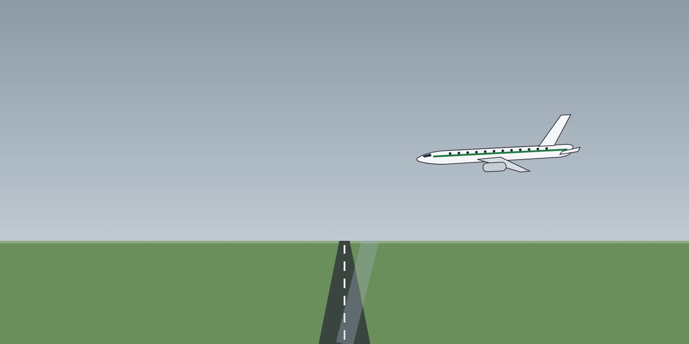

Lesson 02: Aircraft Wind Limitations
Learning objectives
- Distinguish demonstrated crosswind from a limitation.
- Apply tailwind limits.
- Use the manufacturer's crosswind guidance by runway condition.

Demonstrated crosswind
The AFM states the maximum demonstrated crosswind — the highest crosswind tested during certification. Unless the AFM says it is a limitation, it is not a structural or legal limit — but the company normally turns it, or a lower value, into an operational limit in the OM B.
Tailwind
The AFM gives a maximum tailwind for take-off and landing (commonly 10 kt; some aircraft are approved for more with specific conditions). This is a limitation. Performance must also be calculated with the reported tailwind.
Crosswind and runway condition
- Manufacturers publish recommended maximum crosswinds that decrease as the runway condition worsens — by runway condition code (RWYCC) or braking action.
- On a contaminated runway, use the crosswind for the reported RWYCC (see the Cold Weather Operations course).
Other wind-related limits
- Autoland and low-visibility operations have their own headwind, tailwind and crosswind limits.
- Doors: maximum wind for opening or closing passenger and cargo doors.
- Engine start in strong tailwind or crosswind (especially for some engines and propellers).
The actual Domestic Airlines wind limits for each fleet — crosswind by runway condition, tailwind, gusts, limits for the first officer as pilot flying and for low-visibility / autoland — are in the OM B, the FCOM / AOM and the AFM. Always use them; the figures in this course are examples only.
Key takeaways
- Demonstrated crosswind: tested, not normally a limitation — but the company may make it one.
- Tailwind limit in the AFM is a limitation.
- Crosswind limits reduce with the runway condition; autoland has its own limits.
Knowledge check
The AFM maximum demonstrated crosswind is: